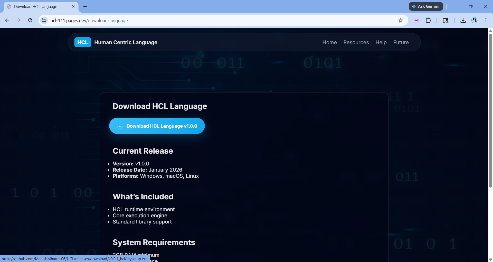
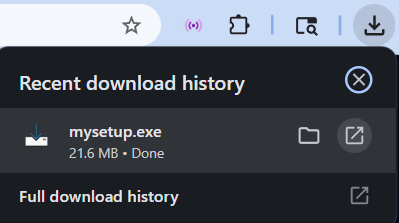
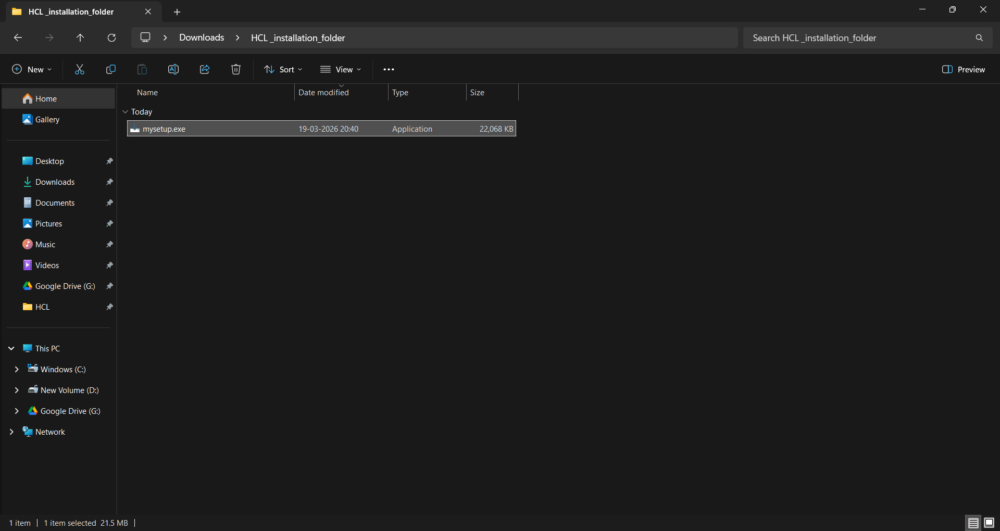
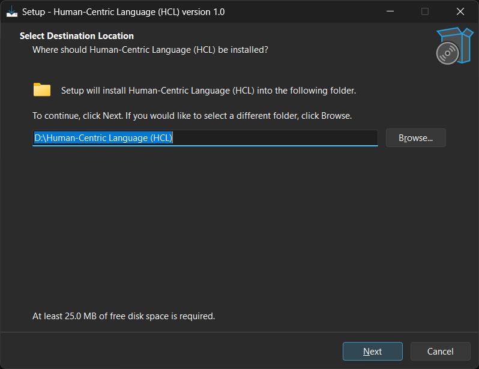
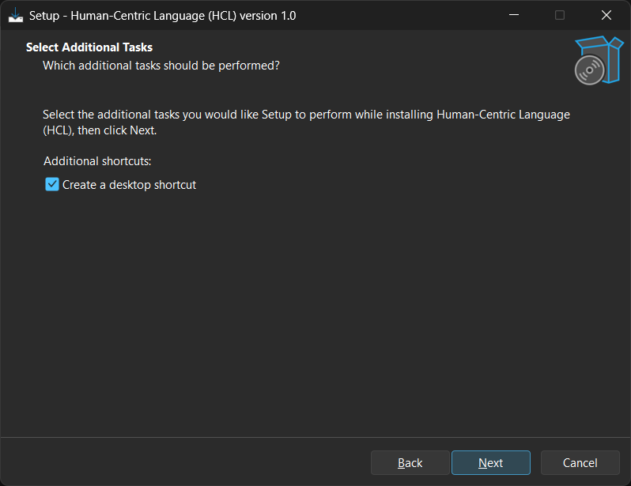
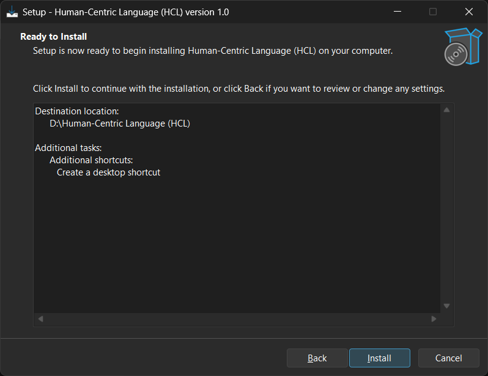
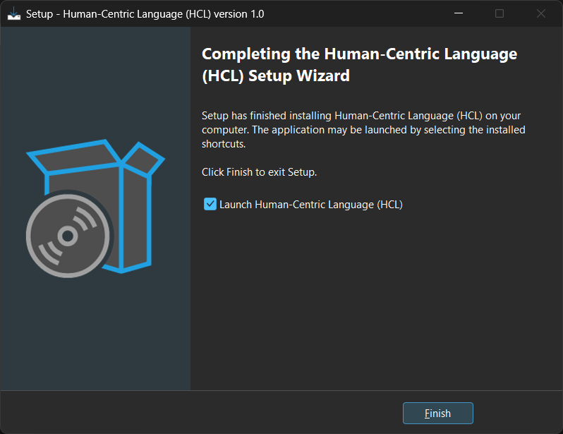
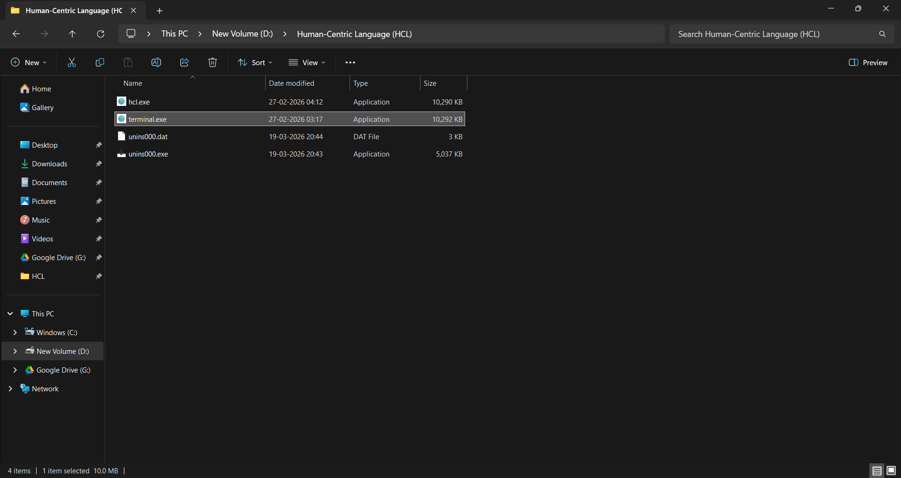
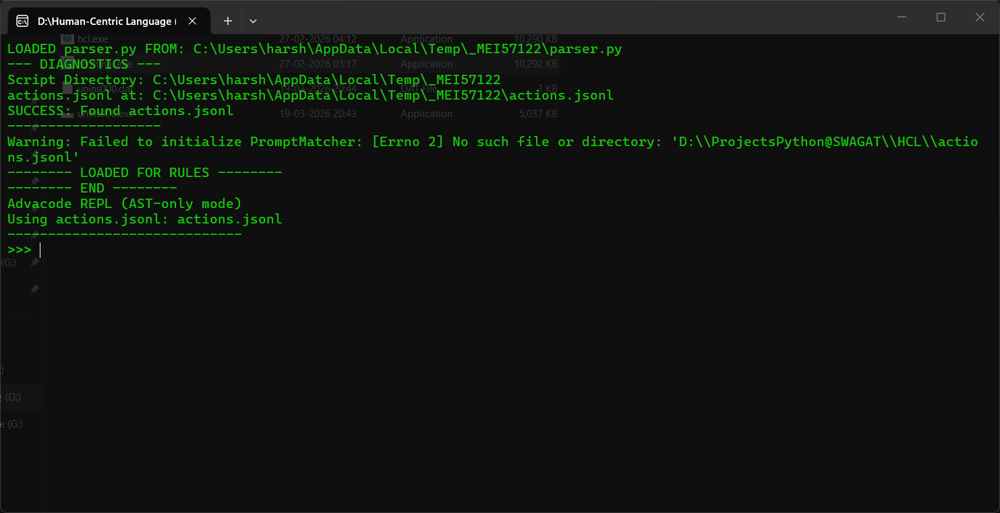

Installation Guide
System Requirements
- Operating System: Windows 10+, macOS 10.15+, or Linux (Ubuntu 20.04+)
- Memory: 2GB RAM minimum (4GB recommended)
- Disk Space: 500MB free space
- Dependencies: Python 3.8+ (for runtime execution)
Download and Installation Steps
Windows
Phase 1: Downloading and Initializing Setup
- Download the Installer: Visit the official download page hcl-111.pages.dev/download-language and click the Download HCL Language v1.0.0 button. Once the download is complete, you will see
mysetup.exein your browser's download history. - Locate the File: Open your file explorer and navigate to the folder where the file was saved.
- Bypass Windows Security: If a "Windows protected your PC" warning appears, click on More info (if visible) and then select Run anyway to start the installation.



Phase 2: Installation Process
- Select Destination: Choose the folder where you want HCL to be installed. The default path is
D:\Human-Centric Language (HCL). Click Next. - Additional Tasks: Check the box for Create a desktop shortcut if you want quick access from your home screen. Click Next.
- Review and Install: Review your chosen settings. If everything looks correct, click Install.
- Finish Setup: Once the installation bar completes, ensure the Launch Human-Centric Language (HCL) box is checked and click Finish.




Phase 3: Launching the Terminal
- Verify Installed Files: Navigate to your installation directory. You should see
hcl.exe,terminal.exe, and other system files likeactions.jsonlin the folder. - Run the REPL: Open
terminal.exe. A command-line interface will appear showing the diagnostic logs. Once the Advacode REPL (AST-only mode) initializes and you see the>>>prompt, the environment is ready for use.


Syntax & Code
How HCL Interprets Human Prompts
HCL uses natural language processing to convert human-readable instructions into executable code. The language is designed to be intuitive while maintaining precision.
# Basic printing
print "Hello World!"
display "Hello World!"
print "Hello World!" endprint
# Printing using variables
assign "Hello " to x
assign "World!" to y
print x plus y
User Input
get user input and store var1
get input and store var2
Assignment
# Single variable assignment
assign "Hello World!" to var1
make variable var2 equal to "Hello World!"
store "Hello World!" in var3
# Multiple variable assignment (explicit values)
create variables x, y, z and set them to "A", "B", "C"
# Multiple variable assignment (same value)
assign "A" to x, y, z
set x, y, z to "A"
make variables x, y, z equal to "A"
Data Types
# Checking data types
assign 34 to x
type of x
assign 3.14 to y
check type of y
assign "Johnny" to z
check type of z
Random Number
generate a random number between 1 and 10
Casting
# Casting numbers to string
assign 10 to a
convert a to string
assign convert a to string to b
# Casting string to integer
assign "123" to c
convert c to integer
assign convert c to integer to d
# Casting string to float
assign "3.14" to e
convert e to float
assign convert e to float to f
# Casting string to complex number
assign "5+2j" to g
convert g to complex number
assign convert g to complex number to h
# Casting string to list
assign "abc" to i
convert i to list
assign convert i to list to j
# Casting string to tuple
assign "12" to k
convert k to tuple
assign convert k to tuple to l
# Casting string to set
assign "123" to m
convert m to set
assign convert m to set to n
# Casting string to frozenset
assign "123" to o
convert o to frozenset
assign convert o to frozenset to p
# Casting string to boolean
assign "true" to q
convert q to boolean
assign convert q to boolean to r
String Methods
# Slicing and substring
assign "HelloWorld" to d
slice d from 1 to 4
assign slice d from 1 to 4 to a
# Whitespace handling
assign " spaced text " to g
strip whitespace from g
assign strip whitespace from g to b
# Joining and concatenation
assign "hello" to i
assign "world" to j
join string i with j
assign join string i with j to k
# Escaped characters
use escaped characters "line\nnew\ttext"
escape characters "path\to\file"
# Capitalization
assign "hello" to o
capitalize o
assign capitalize o to p
# Encoding
assign "encode_this" to r
encode r
assign encode r to s
# Ends with
assign "filename.txt" to t
check if t ends with ".txt"
assign check if t ends with ".txt" to u
# Expand tabs
expand tabs of "a\tb\tc"
# Alphanumeric check
check if "abc123" alphanumeric
assign check if "abc123" alphanumeric to a
# Alphabetic check
assign "HelloWorld" to v
check if v contains only letters
assign check if v contains only letters to w
# ASCII check
assign "A" to x
check if x ascii
assign check if x ascii to y
# Decimal / digit checks
assign "12345" to y
check if y decimal
assign check if y decimal to z
# Identifier validation
assign "valid_var" to ab
check if ab valid identifier
assign check if ab valid identifier to bc
# Lowercase checks
assign "lowercase" to ad
check if ad lowercase
assign check if ad lowercase to da
# Numeric checks
assign "123" to af
check if af numeric
assign check if af numeric to fa
# Printable characters
assign "Hello" to ah
check if ah printable
assign check if ah printable to ha
# Title case checks
assign "Hello World" to ak
check if ak title case
assign check if ak title case to ka
# Uppercase checks
assign "UPPER" to am
check if am uppercase
assign check if am uppercase to ma
# Join using delimiter
assign "abc" to ao
assign "-" to ap
join ao using ap
assign join ao using ap to op
# Case conversion
assign "SAMPLE" to as
convert as to lowercase
assign convert as to lowercase to sa
# Title case conversion
assign "hello world" to ay
convert ay to title case
assign convert ay to title case to ya
# Uppercase conversion
assign "final text" to ba
convert ba to uppercase
ssign convert ba to uppercase to ab
# String indexing
assign "HELLO" to s
character at index 1 from s
assign character at index 1 from s to u
# Negative indexing
assign "PYTHON" to w
character at negative index 2 from w
assign character at negative index 2 from w to v
# Count occurrences
assign "aaaaab" to s
count "a" in s
assign count "a" in s to t
# Index lookup
assign "abracadabra" to y
find "c" inside y
assign find "c" inside y to z
# String formatting
assign "Hello {}, I m {}" to f
format f using "Swagat", "HCL"
assign format f using "Swagat", "HCL" to a
Boolean Methods
assign 5 to x
evaluate boolean of x
Basic Arithmetic
# Addition
assign 5 to a
add a and 10
assign add a and 10 to b
# Subtraction
assign 3 to f
subtract 10 from f
# Multiplication
assign 6 to k
multiply k by 3
assign multiply k by 3 to l
# Division
assign 20 to p
divide p by 4
assign divide p by 4 to q
# Modulus
assign 17 to t
set remainder of t by 3
# Floor Division
assign 17 to c1
floor divide c1 by 3
assign floor divide c1 by 3 to c2
Full Arithmetic Operations
# Addition with assignment
assign 10 to g1
increase g1 by 5
# Subtraction with assignment
assign 20 to k1
subtract 5 from k1
# Multiplication with assignment
assign 3 to o1
multiplication with assign o1 by 4
# Division with assignment
assign 30 to r1
division with assign r1 by 5
# Modulus with assignment
assign 14 to u1
set remainder of u1 by 5
# Floor division with assignment
assign 20 to x1
floor division x1 by 3
# Power with assignment
assign 2 to a2
raise a2 to power 8
# Bitwise AND
assign 12 to d2
and operator bitwise d2 with 6
# Bitwise OR
assign 6 to h2
or operator bitwise h2 with 3
# Bitwise XOR
assign 7 to l2
xor operator bitwise l2 with 2
# Shift right
assign 16 to p2
shift p2 right by 2
# Shift left
assign 5 to t2
shift t2 left by 3
# Equality
assign 5 to x2
check if x2 equals 5
assign check if x2 equals 5 to x3
# Not equal
assign 10 to b3
check if b3 is not equal to 3
assign check if b3 is not equal to 3 to b4
# Greater than
assign 8 to e3
check if e3 is greater than 4
assign check if e3 is greater than 4 to e4
# Less than
assign 4 to h3
check if h3 is less than 9
assign check if h3 is less than 9 to h4
# Greater or equal
assign 10 to k3
check if k3 is greater than or equal to 9
assign check if k3 is greater than or equal to 9 to k4
# Less or equal
assign 5 to n3
check if n3 is less than or equal to 9
assign check if n3 is less than or equal to 9 to n4
# Logical AND
assign 1 to x3
assign 0 to y3
x3 and y3 only
assign x3 and y3 only to z3
# Logical OR
assign 1 to b4
assign 0 to c4
b4 or c4
assign b4 or c4 to d4
# Not / identity / membership
assign 5 to h4
assign 7 to i4
h4 is not i4
assign h4 is not i4 to j4
# Identity and membership (positive)
assign 5 to v4
assign 5 to w4
v4 is equal to w4
assign v4 is equal to w4 to x4
List Methods
# Setting list items
assign [10,20,30] to i
i[0] = 5
# List slicing (negative)
assign [1,2,3,4,5,6] to p
take negative slice p starting 5 from end until 2
assign take negative slice p starting 5 from end until 2 to q
# List slicing
assign [1,2,3,4,5] to t
slice list t from 1 to 4
assign slice list t from 1 to 4 to u
# List contains
assign ["apple","banana"] to x
"banana" in x
assign "banana" in x to y
# Extend list
assign [10,20] to e1
e1.extend([30,40])
# Sort list
assign [3,1,2] to k1
sort k1
# Pop last item
assign [1,2,3] to p1
pop from p1
assign pop from p1 to p2
# Join lists using plus
assign [1,2] to a2
assign [3,4] to b2
join a2 to b2 lists
assign join a2 to b2 lists to c2
# Append item
assign [1,2] to e2
append 3 to e2
# Extend list with another list
assign ["a"] to i2
join ["b","c"] into i2
# Create list using constructor
assign "abc" to k2
convert k2 to list
# Delete entire list
assign ["a","b"] to p2
remove list p2
# Sort list in descending order
assign [3,1,2] to r2
sortreverse r2 descending order
# Reverse list
assign [1,2,3] to v2
reverse v2
# Get item using negative index
assign [10, 20, 30, 40] to a
get item at negative index 1 from a
assign get item at negative index 1 from a to b
# Get item by index
assign [5, 6, 7, 8] to nums
get item at index 2 from nums
assign get item at index 2 from nums to val
# Append element
assign [1, 2, 3] to l
append 4 to l
# Get index of item
assign ["apple", "banana", "mango"] to fruits
get index of "banana" from fruits
# Count occurrences
assign [1, 2, 2, 2, 3] to nums
count 2 in nums
assign count 2 in nums to c
Tuple Methods
# Tuple slicing
assign (1,2,3,4,5) to g
tuple slice g from 1 to 4
assign tuple slice g from 1 to 4 to h
# Tuple slice from start
assign ("a","b","c","d") to j
tuple slice j till 2
assign tuple slice j till 2 to k
# Tuple slice to end
assign (1,2,3,4,5) to m
tuple slice m from 2
assign tuple slice m from 2 to n
# Tuple contains
assign (11,22,33) to r
22 in r
assign 22 in r to s
# Remove item from tuple via list
assign (10,20,30) to u
removing list 20 from tuple u
assign removing list 20 from tuple u to v
# Add tuple to tuple
assign ("a","b") to y
assign ("c","d") to z
join tuple y with z
assign join tuple y with z to x
# Multiply tuple
assign (1,2) to g1
repeat tuple g1 3 times
assign repeat tuple g1 3 times to g2
# Tuple type check
assign (1,2,3) to j1
check if j1 is it tuple
assign check if j1 is it tuple to j2
# Convert tuple to list
assign (1,2,3) to m1
conversion of tuple m1 to list
assign conversion of tuple m1 to list to m2
# Convert list to tuple
assign ["a","b"] to q1
change q1 to tuple
assign change q1 to tuple to q2
# Join tuples
assign (1,2) to s1
assign (3,4) to t1
join tuple s1 and t1
assign join tuple s1 and t1 to u1
# Get tuple item by index
assign (10, 20, 30, 40) to t
get item at index 2 from t
assign get item at index 2 from t to u
# Get tuple item using negative index
assign (5, 6, 7, 8) to a
get item at negative index 1 from a
assign get item at negative index 1 from a to b
# Add item to tuple via list
assign (10, 20, 30) to t
adding list [40] to tuple t
assign adding list [40] to tuple t to u
# Add single item to tuple
assign (1, 2, 3) to t
let tuple item 3 to t
assign let tuple item 3 to t to u
# Tuple unpacking (exact)
assign (10, 20, 30) to t
tuple t to variables x, y, z
# Count occurrences
assign ("apple", "chocolate", "apple", "banana", "apple") to grocery
count "apple" in grocery
assign count "apple" in grocery to count
Set and Frozenset Methods
# Set contains
assign {1,2,3} to a
check if 2 in set a
assign check if 2 in set a to b
# Set symmetric difference
assign {1,2,3} to c1
assign {3,4,5} to d1
symmetric difference of c1 and d1
# Set intersection
assign {1,2,3} to w
assign {2,3,4} to x
common items in w and x
assign common items in w and x to y
# Set difference
assign {1,2,3,4} to o1
assign {2,4} to p1
difference of o1 and p1
# Set difference update
assign {"a","b","c"} to w1
assign {"b"} to x1
difference update set w1 using x1
# Set intersection update
assign {"a","b","c"} to l2
assign {"b"} to m2
intersection update set l2 using m2
# Set is disjoint
assign {1,2,3} to p2
assign {4,5,6} to q2
check if set p2 disjoint with q2
assign check if set p2 disjoint with q2 to r2
# Set subset check
assign {1,2} to v2
assign {1,2,3} to w2
is set v2 contained in w2
assign is set v2 contained in w2 to x2
# Set symmetric difference update
assign {1,2} to t3
assign {2,3} to u3
update set t3 with symmetric difference of u3
# Union with assignment
assign {1,2} to z3
assign {2,3} to a4
combine all elements of set z3 and a4 to result
# Set update
assign {1} to d4
assign {1,2,3} to e4
merge set e4 into set d4
# Discard item from set
assign {10,20,30,40} to nums
discard 40 from set nums
# Set union
assign {1,2,3} to a
assign {3,4,5} to b
combine all elements of set a and b to c
# Create frozenset
assign [1,2,3] to j4
make frozenset from j4
assign make frozenset from j4 to j5
# Frozenset union
assign frozenset({1,2}) to n4
assign frozenset({2,3}) to o4
combine frozensets n4 and o4
assign combine frozensets n4 and o4 to m4
# Frozenset is disjoint
assign frozenset({"x"}) to n5
assign frozenset({"y"}) to o5
do frozensets n5 and o5 share no elements
assign do frozensets n5 and o5 share no elements to p5
# Frozenset subset check
assign frozenset({1}) to p5
assign frozenset({1,2}) to q5
is frozenset p5 contained in q5
assign is frozenset p5 contained in q5 to r5
Dictionaries
# Dictionary length
assign {"a":1,"b":2,"c":3} to g
length of g
assign length of g to h
# Dictionary type check
assign {"id":101,"name":"Sam"} to j
type of j
# Get item by key
assign {"name":"John","age":30} to m
get value for key "name" from dict m
assign get value for key "name" from dict m to n
# Get item safely
assign {"name":"Alice","country":"UK"} to p
get value for key "country" from dict p safely
assign get value for key "country" from dict p safely to q
# Check if key exists
assign {"user":"Tom","role":"admin"} to s
check if key "role" exists dict s
assign check if key "role" exists dict s to t
# Get dictionary keys
assign {"name":"Mia","age":22} to u
get all keys inside dict u
assign get all keys inside dict u to v
# Get dictionary values
assign {"name":"Mia","age":22} to x1
get all values inside dict x1
assign get all values inside dict x1 to y1
# Get dictionary items
assign {"name":"Mia","age":22} to a2
get items dict a2
assign get items dict a2 to b2
# Set item in dictionary
assign {"name":"John","age":25} to d2
set key "age" to 30 in dict d2
# Update dictionary
assign {"a":1,"b":2} to g2
assign {"c":3} to h2
update dict g2 with h2
# Set default value
assign {"a":1} to q2
set default value for key "b" in dict q2
# Pop key from dictionary
assign {"name":"John","age":30} to t2
pop key "age" from dict t2
# Delete key
assign {"name":"Tom","age":40} to z3
delete key "age" from dict z3
# Delete dictionary
assign {"x":10} to d4
remove dict d4
# Clear dictionary
assign {"a":1,"b":2,"c":3} to f4
clear f4
# Copy dictionary
assign {"name":"Sam","age":21} to i4
make a copy of dict i4 to j4
Conditionals
# Conditional statements
assign 10 to x
if x > 10 then print "Greater than 10" endprint elif x == 10 then print "Equal to 10" endprint else print "Less than 10" endprint end-if
# Nested conditional statements
if 2 < 11 then assign {1,2,3} to c1; assign {3,4,5} to d1; symmetric difference of c1 and d1; assign {1,2,3} to w; assign {2,3,4} to x; assign common items in w and x to y elif 2 > 11 then assign {1,2,3} to w; assign {2,3,4} to x; assign common items in w and x to y; if 2 < 11 then assign {1,2,3} to c1; assign {3,4,5} to d1; symmetric difference of c1 and d1; assign {1,2,3} to w; assign {2,3,4} to x; assign common items in w and x to y elif 2 > 11 then assign {1,2,3} to w; assign {2,3,4} to x; assign common items in w and x to y; if 2 < 11 then assign {1,2,3} to c1; assign {3,4,5} to d1; symmetric difference of c1 and d1; assign {1,2,3} to w; assign {2,3,4} to x; assign common items in w and x to y elif 2 > 11 then assign {1,2,3} to w; assign {2,3,4} to x; assign common items in w and x to y else print "none" endprint end-if else print "none" endprint end-if else print "none" endprint end-if
# For loop inside conditional statement
assign 5 to x
if x > 3 then for i in range(3) then print "Looping running:", i endprint end for else print "Conditional false" endprint end-if
# While loop inside conditional statement
assign 2 to x
if x < 5 then assign 0 to i; while i < 3 then print "While loop:", i endprint; increase i by 1 end loop else print "Conditional false" endprint end-if
# Function inside conditional statements
assign 10 to x
if x > 5 then define function greet then print "Hello from function" endprint end function call greet else print "No Function Call" endprint end-if
# Class inside conditional statements
assign 1 to x
if x > 5 then class Person then make constructor for class Person with self, name then assign name to self.name end constructor; define function show with self then print "Name:", self.name endprint end function end class; create object p from class Person with parameters "Manish"; call method show on object p else print "No Function Call" endprint end-if
Loops
# For Loop
for i in [1,2,3] then print i endprint end for
assign [1,2,3] to x
for i in x then print i endprint end for
for i in "HELLO WORLD" then print i endprint end for
# Nested For Loop
for i in [1,2,3] then print i endprint; for i in "HELLO WORLD " then print i endprint end for end for
# Conditional statement inside for loop
for i in range(5) then if i % 2 == 0 then print i, "Even number" endprint else print i, "Odd number" endprint end-if end for
# For loop using break
for i in fruits then print i endprint; if i == "banana" then break end-if end for
# For loop using continue
for i in fruits then if i == "banana" then continue end-if print i end for
# While loop inside for loop
for i in range(3) then print "Outer loop:", i endprint; assign 0 to j; while j < 2 then print " Inner while:", j endprint; increase j by 1 end loop end for
# Function inside for loop
for i in [1,2,3] then print i endprint; define function student then assign 2 to x; assign 3 to y; assign add x and y to z; for i in [1,2,3] then print i endprint end for end function end for
# Class inside for loop
for i in "HELLO WORLD" then print i endprint; class swag then assign {1,2,3} to c1; assign {3,4,5} to d1; symmetric difference of c1 and d1; class water then for i in [1,2,3] then print i end for end class end class end for
# While loop
assign 0 to i
while i < 5 then if i % 2 == 0 then print i, "Even number" endprint else print i, "Odd number" endprint end-if increase i by 1 end loop
# Nested while loop
assign 0 to i
while i < 3 then print "Outer loop:", i endprint; assign 0 to j; while j < 2 then print " Inner while:", j endprint; increase j by 1 end loop increase i by 1 end loop
# Class inside while loop
assign 0 to i
while i < 2 then class car then make constructor for class car with self, num then assign num to self.num end constructor; define function show with self then print "Car number:", self.num endprint end function end class; create object c1 from class car with parameters i; call method show on object c1; increase i by 1 end loop
# function inside while loop
assign 0 to i
while i < 3 then define function square with num then return num*num end function print square(i) endprint; increase i by 1 end loop
# Conditional statement inside while loop
assign 0 to i
while i < 5 then if i % 2 == 0 then print i, "Even number" endprint else print i, "Odd number" endprint end-if increase i by 1 end loop
# For loop inside while loop
assign 0 to i
while i < 3 then print "While loop:", i endprint; for j in range(2) then print " For loop:", j endprint end for increase i by 1 end loop
Functions
# Define Function
define function student then assign 2 to x; assign 3 to y; assign add x and y to z end function
# Function with Parameters
define function student with name, age, self then assign name to self.name; assign age to self.age; print name, age endprint end function
# Nested Function
define function student then assign 2 to x; assign 3 to y; assign add x and y to z; define function student then assign 2 to x; assign 3 to y; assign add x and y to z end function end function
# Conditional statements inside Function
define function student then assign 2 to x; assign 3 to y; assign add x and y to z; if 2 < 11 then assign {1,2,3} to c1; assign {3,4,5} to d1; symmetric difference of c1 and d1; assign {1,2,3} to w; assign {2,3,4} to x; assign common items in w and x to y elif 2 > 11 then assign {1,2,3} to w; assign {2,3,4} to x; assign common items in w and x to y; if 2 < 11 then assign {1,2,3} to c1; assign {3,4,5} to d1; symmetric difference of c1 and d1; assign {1,2,3} to w; assign {2,3,4} to x; assign common items in w and x to y elif 2 > 11 then assign {1,2,3} to w; assign {2,3,4} to x; assign common items in w and x to y; if 2 < 11 then assign {1,2,3} to c1; assign {3,4,5} to d1; symmetric difference of c1 and d1; assign {1,2,3} to w; assign {2,3,4} to x; assign common items in w and x to y elif 2 > 11 then assign {1,2,3} to w; assign {2,3,4} to x; assign common items in w and x to y else print "none" endprint end-if else print "none" endprint end-if else print "none" endprint end-if end function
# For loop inside Function
define function student then assign 2 to x; assign 3 to y; assign add x and y to z; for i in [1,2,3] then print i endprint end for end function
call student
# While loop inside Function
define function student then assign 2 to x; assign 3 to y; assign add x and y to z; while x < 10 then print x endprint; add 1 to x end loop end function
# Class inside Function
define function student then assign 2 to x; assign 3 to y; assign add x and y to z; class Person then assign {1,2,3} to c1; assign {3,4,5} to d1; symmetric difference of c1 and d1 end class end function
OOP - (Object Oriented Programming)
# create class and its object
class Person then assign {1,2,3} to c1; assign {3,4,5} to d1; symmetric difference of c1 and d1 end class
create object s1 from class swagat
# delete object
remove object s1
# Nested class
class person then assign {1,2,3} to c1; assign {3,4,5} to d1; symmetric difference of c1 and d1; class water then assign ("a","b") to y; assign ("c","d") to z; assign join tuple y with z to x; print x end class end class
# Nested class with neseted if else
class person then assign {1,2,3} to c1; assign {3,4,5} to d1; symmetric difference of c1 and d1; class water then class ssw then assign {1,2,3} to c1; assign {3,4,5} to d1; symmetric difference of c1 and d1; if 2 < 11 then assign {1,2,3} to c1; assign {3,4,5} to d1; symmetric difference of c1 and d1; assign {1,2,3} to w; assign {2,3,4} to x; assign common items in w and x to y elif 2 > 11 then assign {1,2,3} to w; assign {2,3,4} to x; assign common items in w and x to y; if 2 < 11 then assign {1,2,3} to c1; assign {3,4,5} to d1; symmetric difference of c1 and d1; assign {1,2,3} to w; assign {2,3,4} to x; assign common items in w and x to y elif 2 > 11 then assign {1,2,3} to w; assign {2,3,4} to x; assign common items in w and x to y; if 2 < 11 then assign {1,2,3} to c1; assign {3,4,5} to d1; symmetric difference of c1 and d1; assign {1,2,3} to w; assign {2,3,4} to x; assign common items in w and x to y elif 2 > 11 then assign {1,2,3} to w; assign {2,3,4} to x; assign common items in w and x to y else print "none" endprint end-if else print "none" endprint end-if else print "none" endprint end-if end class end class end class
# Nested class with nested for loop
class swag then assign {1,2,3} to c1; assign {3,4,5} to d1; symmetric difference of c1 and d1; class water then for i in [1,2,3] then print i end for end class end class
# inheritance
class swag then assign {1,2,3} to c1; assign {3,4,5} to d1; symmetric difference of c1 and d1 end class
define class gaot extends swag then print 2 endprint; class swami then assign {1,2,3} to c1; assign {3,4,5} to d1; symmetric difference of c1 and d1 end class end class
define class rock extends gaot then print "3rd class extends" endprint end class
# nested class
class person then assign {1,2,3} to c1; assign {3,4,5} to d1; symmetric difference of c1 and d1; class person then assign {1,2,3} to c1; assign {3,4,5} to d1; symmetric difference of c1 and d1; class swag then assign {1,2,3} to c1; assign {3,4,5} to d1; symmetric difference of c1 and d1 end class end class end class
class swagat then assign {1,2,3} to c1; assign {3,4,5} to d1; symmetric difference of c1 and d1; class swagat then assign {1,2,3} to c1; assign {3,4,5} to d1; symmetric difference of c1 and d1; class swagat then assign {1,2,3} to c1; assign {3,4,5} to d1; symmetric difference of c1 and d1 end class if 2 < 11 then assign {1,2,3} to c1; assign {3,4,5} to d1; symmetric difference of c1 and d1; assign {1,2,3} to w; assign {2,3,4} to x; assign common items in w and x to y elif 2 > 11 then assign {1,2,3} to w; assign {2,3,4} to x; assign common items in w and x to y; if 2 < 11 then assign {1,2,3} to c1; assign {3,4,5} to d1; symmetric difference of c1 and d1; assign {1,2,3} to w; assign {2,3,4} to x; assign common items in w and x to y elif 2 > 11 then assign {1,2,3} to w; assign {2,3,4} to x; assign common items in w and x to y; if 2 < 11 then assign {1,2,3} to c1; assign {3,4,5} to d1; symmetric difference of c1 and d1; assign {1,2,3} to w; assign {2,3,4} to x; assign common items in w and x to y elif 2 > 11 then assign {1,2,3} to w; assign {2,3,4} to x; assign common items in w and x to y else print "none" endprint end-if else print "none" endprint end-if else print "none" endprint end-if end class end class
# Constructor
class swagat then assign {1,2,3} to c1; assign {3,4,5} to d1; symmetric difference of c1 and d1; make constructor for class swagat with self then print 2 endprint end constructor end class
# __str__ method
class swag then make constructor for class swagat with self then print 2 endprint end constructor define str function with self then print 3 end str end class
# abstraction (private/protected property)
class swag then make constructor for class swagat with self then print 2 endprint end constructor define str function with self then print 3 end str define function crt with self then set private property x to 3; protected property y to 2 end function end class
# abstraction (private/protected function)
class swag then make constructor for class swagat with self then print 2 endprint end constructor define str function with self then print 3 end str define function __cart with self then set private property x to 3; protected property y to 2 end function; define function _cold with self then set private property x to 3; protected property y to 2 end function end class
# Method call
class swag then make constructor for class swagat with self then print 2 endprint end constructor define str function with self then print 3 end str define function __cart with self then set private property x to 3; protected property y to 2 end function define function _cold with self then set private property x to 3; protected property y to 2 end function define function friple then if 2 < 11 then assign {1,2,3} to c1; assign {3,4,5} to d1; symmetric difference of c1 and d1; assign {1,2,3} to w; assign {2,3,4} to x; assign common items in w and x to y elif 2 > 11 then assign {1,2,3} to w; assign {2,3,4} to x; assign common items in w and x to y; if 2 < 11 then assign {1,2,3} to c1; assign {3,4,5} to d1; symmetric difference of c1 and d1; assign {1,2,3} to w; assign {2,3,4} to x; assign common items in w and x to y elif 2 > 11 then assign {1,2,3} to w; assign {2,3,4} to x; assign common items in w and x to y; if 2 < 11 then assign {1,2,3} to c1; assign {3,4,5} to d1; symmetric difference of c1 and d1; assign {1,2,3} to w; assign {2,3,4} to x; assign common items in w and x to y elif 2 > 11 then assign {1,2,3} to w; assign {2,3,4} to x; assign common items in w and x to y else print "none" endprint end-if else print "none" endprint end-if else print "none" endprint end-if end function end class
create object w1 from class swag
call method friple on object w1
DSA - (Data Structures and Algorithms)
# Create Stack
create stack sk
# Push Element onto Stack
push 10 to stack sk
# Pop Element (Remove Top)
pop from stack sk
# Peek (View Top Element Without Removing)
peek stack sk
# Check if Stack is Empty (Boolean Result)
is stack sk empty
# Get Size of Stack
size of stack sk
# Assign Pop Result to Variable
assign pop from stack sk to x
# Assign Peek (Top Element) to Variable
assign peek stack sk to topVal
# Assign “Is Empty” Result to Variable
assign is stack sk empty to isEmpty
# Assign Stack Size to Variable
assign size of sk to man
# Create Queue
create queue q
# Enqueue Element (Add to Rear)
enqueue 10 to queue q
# Dequeue Element (Remove from Front)
dequeue from queue q
# Peek (View Front Element Without Removing)
peek queue q
# Check if Queue is Empty (Boolean Result)
is queue q empty
# Get Size of Queue
size of queue q
# Assign Dequeue Result to Variable
assign dequeue from queue q to x
# Assign Peek Element to Variable
assign peek queue q to frontVal
# Assign “Is Empty” Result to Variable
assign is queue q empty to isEmpty
# Assign Queue Size to Variable
assign size of q to sz
# Create Linked List
create linked list lnklist
# Insert at Beginning (Prepend)
insert 10 at beginning of linked list lnklist
# Insert at End (Append)
insert 20 at end of linked list lnklist
# Insert at Specific Index
insert 15 at index 1 in linked list lnklist
# Insert After a Given Node/Value
insert 25 after node 15 in linked list lnklist
# Insert Before a Given Node/Value
insert 12 before node 15 in linked list lnklist
# Delete from Beginning (Remove Head)
delete from beginning of linked list lnklist
# Delete from End (Remove Tail)
delete from end of linked list lnklist
# Delete Node by Value
remove 20 from linked list lnklist
# Delete Node at Specific Index
delete from index 1 in linked list lnklist
# Delete Node After a Given Node/Value
delete node after 12 in linked list lnklist
# Clear Entire Linked List
delete entire linked list lnklist
# Traverse / Display Linked List (Forward)
traverse linked list lnklist
# Traverse Backward (Reverse Display)
traverse backward linked list lnklist
# Update Value at Specific Index
update value at index 0 to 99 in linked list lnklist
# Update Node by Value
update node 20 to 200 in linked list lnklist
# Search Value and Store Position
search 200 in linked list lnklist and store in pos
# Get Node at Index and Store It
assign node at index 0 in linked list lnklist to nodeVal
# Assign Size / Length of Linked List
assign size of linked list lnklist to sz
assign length of linked list lnklist to sz
# Assign “Is Empty” Result to Variable
assign check linked list lnklist empty to isEmpty
# Reverse Linked List (Iterative)
reverse linked list lnklist
# Find Middle Element and Store It
assign middle element of linked list lnklist to midVal
# Find N-th Node from End and Store It
assign 3 th node from end of linked list lnklist to nthVal
# Merge Another Sorted Linked List
create linked list lnklist2
insert 20 at end of linked list lnklist2
merge lnklist2 into linked list lnklist
# Remove Duplicates from Linked List
remove duplicates from linked list lnklist
# Check if Linked List is Palindrome and Store Result
check if linked list lnklist is palindrome and store in isPal
# Create Hash Table
create hash table ht
# Put / Insert Key–Value Pair
put 100 into hash table ht at key 1
# Insert Only If Key Is Absent
insert 200 into hash table ht if key 2 is absent
# Assign Value of Key to Variable
assign value of key 1 in hash table ht to val1
# Safe Get with Default Value
assign safe get of key 5 from hash table ht with default 0 to val5
# Delete Key from Hash Table
delete key 1 from hash table ht
# Delete Key and Store Removed Value
delete key 2 from hash table ht and store in removedVal
# Clear Entire Hash Table
clear entire hash table ht
# Check if Key Exists and Store Result
assign does hash table ht contain key 1 to hasKey
# Check if Value Exists and Store Result
assign does hash table ht contain value 200 to hasVal
# Assign Size of Hash Table
assign size of hash table ht to sz
# Assign “Is Empty” Result to Variable
assign is hash table ht empty to isEmpty
# Assign Keys to Variable
assign keys of hash table ht to keysList
# Assign Values to Variable
assign values of hash table ht to valuesList
# Assign Key–Value Pairs to Variable
assign key-value pairs of hash table ht to pairsList
# Update Hash Table from Another Hash Table
create hash table ht2
put 400 into hash table ht2 at key 4
put 500 into hash table ht2 at key 5
update hash table ht from ht2
# Merge Two Hash Tables into a New One
merge hash table ht and ht2 into mergedHT
# Assign Shallow Copy of Hash Table
assign shallow copy of hash table ht to htCopy
# Assign Deep Copy of Hash Table
assign deep copy of hash table ht to htDeepCopy
# Assign Hash of a Value
assign hash of 100 to hashVal
# Assign Memory Size of Hash Table
assign memory size of hash table ht to memBytes
# Create Chained Hash Table with Capacity
create chained hash table ht with capacity 10
# Calculate Hash Index for Key with Capacity
calculate hash index for 25 with capacity 10 and store in idx
# Insert into Chained Hash Table
insert 300 at key 3 into chained hash table ht with capacity 10
# Get Value from Chained Hash Table and Store It
get value of key 3 from chained hash table ht with capacity 10 into val3
# Create Binary Tree with Root
create binary tree bt with root 50
# Create Empty Binary Tree
create empty binary tree bt
# Create Binary Tree from Array (Level-Order)
assign [1,2,4,5,3,7,6,8,9] to arr
create binary tree bt from array arr level-order
create binary tree btSub from array subarr level-order
# Clone Binary Tree
clone binary tree bt to btCopy
# Delete Leaf Node
delete leaf node 9 from binary tree bt
For your reference I have assign [1,2,4,5,3,7,6,8,9] to arr and to create binary tree bt and this is how it looks:
So, please generate delete leaf node user input again.
# Delete Node with One Child
delete node 5 with one child from binary tree bt
# Delete Node with Two Children
delete node 2 with two children from binary tree bt
# Delete Subtree at a Given Node
delete subtree at node 4 from binary tree bt
# Clear Entire Binary Tree
clear entire binary tree bt
# Insert Left Child
insert 10 as left child of 3 in binary tree bt
# Insert Right Child
insert 11 as right child of 3 in binary tree bt
# Insert at First Available Position (Level-Order Insert)
insert 12 at first available position in binary tree bt
# Delete Node from Generic Binary Tree
delete node 7 from generic binary tree bt
# Assign Inorder Traversal
assign inorder traversal of bt to inorderList
# Assign Preorder Traversal
assign preorder traversal of bt to preorderList
# Assign Postorder Traversal
assign postorder traversal of bt to postorderList
# Assign Level-Order Traversal
assign level order traversal of bt to levelOrderList
# Assign Reverse Level-Order Traversal
assign reverse level order traversal of binary tree bt to revLevelList
# Assign Zig-Zag (Spiral) Traversal
assign zig-zag traversal of binary tree bt to zigzagList
# Assign Root of Binary Tree
assign root of binary tree bt to rootVal
# Assign Parent of a Node
assign [1,2,4,5,3,7,6,8,9] to arr
create binary tree bt from array arr level-order
assign parent of node 3 in binary tree bt to parentVal
# Assign Left Child of a Node
assign [1,2,4,5,3,7,6,8,9] to arr
create binary tree bt from array arr level-order
insert 10 as left child of 3 in binary tree bt
assign left child of node 3 in binary tree bt to leftChildVal
# Assign Right Child of a Node
assign [1,2,4,5,3,7,6,8,9] to arr
create binary tree bt from array arr level-order
insert 11 as right child of 3 in binary tree bt
assign right child of node 3 in binary tree bt to rightChildVal
# Assign Sibling of a Node
assign sibling of node 3 in binary tree bt to siblingVal
# Assign Children of a Node
assign children of node 3 in binary tree bt to childrenList
# Assign Height of Binary Tree
assign height of binary tree bt to heightVal
# Assign Depth of a Node
assign depth of node 3 in binary tree bt to depthVal
# Assign Level of a Node
assign level of node 3 in binary tree bt to levelVal
# Assign Total Number of Nodes
assign total nodes of binary tree bt to totalNodes
# Assign Number of Leaf Nodes
assign leaf nodes of binary tree bt to leafCount
# Assign Number of Internal Nodes
assign internal nodes of binary tree bt to internalCount
# Assign Number of Full Nodes
assign full nodes of binary tree bt to fullCount
# Assign Width of Binary Tree
assign width of binary tree bt to widthVal
# Assign “Is Empty” Result
assign is binary tree bt empty to isEmpty
# Assign “Is Full” Binary Tree Result
assign is binary tree bt full to isFull
# Assign “Is Complete” Binary Tree Result
assign is binary tree bt complete to isComplete
# Assign “Is Perfect” Binary Tree Result
assign is binary tree bt perfect to isPerfect
# Assign “Is Balanced” Binary Tree Result
assign is binary tree bt balanced to isBalanced
# Assign “Is Symmetric” Binary Tree Result
assign is binary tree bt symmetric to isSymmetric
# Are Two Binary Trees Identical
assign are binary trees bt and bt2 identical to areIdentical
# Check if Value Is Present in Binary Tree
assign is value 7 present in binary tree bt to isPresent
# Assign Node with Given Value
assign node with value 7 in binary tree bt to node7
# Search Path to a Value
search for 7 in binary tree bt and assign path to path7
# Mirror Binary Tree
mirror binary tree bt
# Invert Binary Tree
invert binary tree bt
# Flatten Binary Tree to Linked List
flatten binary tree bt to linked list
# Convert Binary Tree to Doubly Linked List
convert binary tree bt to doubly linked list in dll
# Convert Binary Tree to Array (Level-Order)
convert binary tree bt to array level-order in arrBT
# Build Binary Tree from Preorder and Inorder Arrays
build binary tree btFromPreIn from preorder preorderList and inorder inorderList
# Build Binary Tree from Inorder and Postorder Arrays
build binary tree btFromInPost from inorder inorderList and postorder postorderList
# Lowest Common Ancestor (LCA)
assign lowest common ancestor of 8 and 9 in binary tree bt to lcaVal
# Diameter of Binary Tree
assign diameter of binary tree bt to diameterVal
# Maximum Path Sum
assign maximum path sum of binary tree bt to maxPathSum
# Check if One Tree Is a Subtree of Another
assign [5,8,9] to subarr
assign is binary tree btSub a subtree of bt to isSubtree
# Boundary Traversal of Binary Tree
assign boundary traversal of binary tree bt to boundaryList
# Vertical Order Traversal
assign vertical order traversal of binary tree bt to verticalList
# Top View of Binary Tree
assign top view of binary tree bt to topViewList
# Bottom View of Binary Tree
assign bottom view of binary tree bt to bottomViewList
# Left View of Binary Tree
assign left view of binary tree bt to leftViewList
# Right View of Binary Tree
assign right view of binary tree bt to rightViewList
# Distance Between Two Nodes
assign distance between 8 and 6 in binary tree bt to distVal
# Serialize Binary Tree to String
assign serialized string of binary tree bt to treeStr
# Deserialize Binary Tree from String
assign binary tree from string treeStr to btFromStr
# Serialize Binary Tree to Array
assign serialized array of binary tree bt to arrSerialized
# Persist Binary Tree to File
persist binary tree bt to file "tree_data.txt"
# Create Empty Binary Search Tree
create empty bst binSrhTree
# Create BST with Root Value
create bst binSrhTree with root 50
# Build BST from Array
assign [50, 30, 70, 20, 40, 60, 80] to bstArr
build bst binSrhTree from array bstArr
# Clone Binary Search Tree
clone bst binSrhTree to binSrhTreeCopy
# Insert Value into BST
insert 65 into bst binSrhTree
# Insert Multiple Values into BST
insert values [10, 35, 75] into bst binSrhTree
# Delete Value from BST
delete 30 from bst binSrhTree
# Search Node in BST
assign node 65 in bst binSrhTree to node65
# Assign Parent of a Value in BST
assign parent of 65 in bst binSrhTree to parent65
# Assign Path to a Value in BST
assign path to 65 in bst binSrhTree to path65
# Find Minimum Value in BST
assign min of bst binSrhTree to minVal
# Find Maximum Value in BST
assign max of bst binSrhTree to maxVal
# Delete Minimum Value from BST
delete min from bst binSrhTree
# Delete Maximum Value from BST
delete max from bst binSrhTree
# Find Inorder Successor
assign inorder successor of 65 in bst binSrhTree to successor65
# Find Inorder Predecessor
assign inorder predecessor of 65 in bst binSrhTree to predecessor65
# Check if Tree Is a Valid BST
check if binSrhTree is valid bst and assign to isValidBST
# Check if Tree Is Balanced
check if binSrhTree is balanced and assign to isBalancedBST
# Assign Height of Tree
assign height of binSrhTree to heightBST
# Assign Node Count of Tree
assign node count of binSrhTree to nodeCountBST
# Assign Leaf Count of Tree
assign leaf count of binSrhTree to leafCountBST
# Assign Internal Node Count of Tree
assign internal node count of binSrhTree to internalCountBST
# Lowest Common Ancestor (LCA) in BST
assign lca of 20 and 40 in bst binSrhTree to lcaBST
# K-th Smallest Element in BST
assign 3th smallest in bst binSrhTree to kthSmallestVal
# K-th Largest Element in BST
assign 2th largest in bst binSrhTree to kthLargestVal
# Range Search in BST
assign elements between 25 and 70 in bst binSrhTree to rangeVals
# Convert BST to Sorted Array
convert bst binSrhTree to sorted array sortedArr
# Build Balanced BST from Sorted Array
build balanced bst balancedBST from sorted array sortedArr
# Linear Search in First Occurrence
assign [12, 7, 25, 3, 18, 42, 9, 18, 30] to searchArr
find first occurrence of 18 in searchArr and store in idxFirst
# Linear Search in Last Occurrence
find last occurrence of 18 in searchArr and store in idxLast
# All Indices of a Value
find all indices of 18 in searchArr and store in idxAll
# Count Occurrences
find total count of 18 in searchArr and store in count18
# Contains (Existence Check)
check if searchArr contains 18 and store in has18
# First Condition
find first x in searchArr where x > 20 and store in firstGt20
# All Elements Matching Condition
find all x in searchArr where x > 20 and store in allGt20
# Count Matching Condition
find total x in searchArr satisfying x > 20 and assign to countGt20
# Case-Insensitive Search
search searchArr ignoring case for 18 and put index in ciIdx
# Range-Bounded Search
search 18 in searchArr from index 2 to 7 and store in rangeIdx
# Circular Search
circular search 18 in searchArr starting at 6 and store in circIdx
# Find Minimum
find minimum value in searchArr and store in minVal
# Find Maximum
find maximum value in searchArr and store in maxVal
# First Element Greater Than Value
find first element greater than 18 in searchArr and store in firstGt18
# First Element Less Than Value
find first element less than 18 in searchArr and store in firstLt18
# Nearest Match to Index
find occurrence of 18 in searchArr nearest to index 4 and store in nearIdx
# Exact Match in Binary Search
assign [3, 7, 9, 12, 18, 18, 25, 30, 42] to sortedArr
binary search 18 in sortedArr and store in bsIdx
# Recursive Binary Search
recursive binary search 18 in sortedArr and store in bsRecIdx
# Iterative
iterative binary search 18 in sortedArr and store in bsIterIdx
# Lower Bound
find lower bound of 18 in sortedArr and store in lbIdx
# Upper Bound
find upper bound of 18 in sortedArr and store in ubIdx
# First Occurrence
binary search first occurrence of 18 in sortedArr and store in firstBsIdx
# Last Occurrence
binary search last occurrence of 18 in sortedArr and store in lastBsIdx
# Count Occurrences
binary search count of 18 in sortedArr and store in bsCount18
# Search Insert Position
find search insert position of 20 in sortedArr and store in insPos20
# First Element Satisfying Condition
binary search first where x >= 18 in sortedArr and store in firstCondIdx
# Last Element Satisfying Condition
binary search last where x <= 18 in sortedArr and store in lastCondIdx
# Rotated Array Search
assign [18, 25, 30, 42, 3, 7, 9, 12, 18] to rotatedArr
search 18 in rotated array rotatedArr and store in rotIdx
# Find Pivot Index (Rotated Array)
binary search pivot of rotatedArr and assign to pivotIdx
# Minimum in Rotated Array
find minimum in rotated array rotatedArr and store in rotMinVal
# Exponential Search — Exact Match
exponential search 30 in sortedArr and store in expIdx
# Minimum Feasible Value
binary search min answer where x * x >= 200 between 0 and 50 and store in minAns
# Maximum Feasible Value
binary search max answer where x * x <= 200 between 0 and 50 and store in maxAns
# Strictly Sorted Matrix
assign [[3, 7, 9], [12, 18, 25], [30, 42, 55]] to strictMat
binary search 25 in strictly sorted matrix strictMat and store in matIdx
# Row-Wise Sorted Matrix
assign [[3, 7, 9], [12, 18, 25], [30, 42, 55]] to rowMat
search 18 in row-wise sorted matrix rowMat and store in matPos
# Bubble Sort
assign [29, 10, 14, 37, 13, 14, 5, 42, 8] to sortArr
standard bubble sort sortArr
# Optimized Bubble Sort
optimized bubble sort sortArr
# Recursive
recursive bubble sort sortArr
# Ascending Order
ascending bubble sort sortArr
# Descending Order
descending bubble sort sortArr
# Ascending Order in Selection Sort
assign [29, 10, 14, 37, 13, 14, 5, 42, 8] to sortArr
selection sort sortArr
# Descending Order
descending selection sort sortArr
# Stable Variant
stable selection sort sortArr
# Recursive
recursive selection sort sortArr
# Double (Bidirectional)
double selection sort sortArr
# Partial Range
selection sort sortArr from 2 to 6
# Ascending Order in Insertion Sort
assign [29, 10, 14, 37, 13, 14, 5, 42, 8] to sortArr
insertion sort sortArr
# Descending Order
descending insertion sort sortArr
# Binary Insertion Variant
binary insertion sort sortArr
# Recursive
recursive insertion sort sortArr
# Partial Range
insertion sort sortArr from 1 to 7
# Recursive (Standard) in Quick Sort
assign [29, 10, 14, 37, 13, 14, 5, 42, 8] to sortArr
quick sort sortArr
# First Element as Pivot
quick sort sortArr using first pivot
# Random Pivot
randomized quick sort sortArr
# Median-of-Three Pivot
quick sort sortArr using median of three
# Descending Order
descending quick sort sortArr
# Stable Variant
stable quick sort sortArr
# Stable Counting Sort
assign [4, 2, 7, 3, 2, 9, 1, 5, 3] to countArr
stable counting sort countArr
# General Counting Sort
sort countArr using counting sort
# With Explicit Range
counting sort countArr with range 1 to 9
# Descending Order
counting sort countArr descending
# Subarray Range
counting sort countArr from index 2 to 7
# Base-10 (Standard) Radix Sort
assign [4, 2, 7, 3, 2, 9, 1, 5, 3] to countArr
radix sort countArr
# LSD Radix Sort
lsd radix sort countArr
# MSD Radix Sort
msd radix sort countArr
# Signed Integers (With Negatives)
assign [4, -2, 7, -3, 0, 5, -1, 9] to signedArr
signed radix sort signedArr
# Strings (Lexicographical)
assign ["cat", "apple", "bat", "dog", "ant"] to strArr
string radix sort strArr
# Custom Base
radix sort countArr base 2
# Binary / Bitwise
binary radix sort countArr
# Bucket Variant
bucket radix sort countArr
# In-Place / Binary Exchange
inplace radix sort countArr
# Bottom-Up (Iterative) Merge Sort
assign [29, 10, 14, 37, 13, 14, 5, 42, 8] to sortArr
bottom up merge sort sortArr
# In-Place
inplace merge sort sortArr
# Stable
stable merge sort sortArr
# Descending Order
descending merge sort sortArr
Examples
Prime Number Checking
get user input and store n
assign 1 to is_prime
if n <= 1 then print "Not a prime number" else assign 2 to i; while i < n then if n % i == 0 then assign 0 to is_prime; break end if; add 1 to i end loop; if is_prime == 1 then print "Prime number" else print "Not a prime number" end if end if
Factorial Calculator
get user input and store n
assign 1 to fact
assign 1 to i
while i <= n then multiplication with assign fact by i; add 1 to i end loop; print fact
Fibonacci Sequence
get user input and store n
assign 0 to a
assign 1 to b
assign 1 to i
while i <= n then print a; assign a + b to c; assign b to a; assign c to b; add 1 to i end loop
Arithmetic Operations
assign 10 to a
assign 5 to b
add a and b, store in sum
subtract b from a, store in difference
multiply a by b, store in product
divide a by b, store in quotient
print sum # Output: 15
print difference # Output: 5
print product # Output: 50
print quotient # Output: 2
Working with Variables
set name to "John Doe"
set age to 25
set is_student to true
print "Name: " + name
print "Age: " + age
print "Student: " + is_student
Control Flow
assign 85 to score
if score >= 90 then
print "Grade: A"
else if score >= 80 then
print "Grade: B"
else if score >= 70 then
print "Grade: C"
else
print "Grade: F"
Lists and Collections
create list with 1, 2, 3, 4, 5 and store as numbers
add 6 to numbers
print numbers # Output: [1, 2, 3, 4, 5, 6]
for each num in numbers
print num
Dictionaries
create dictionary as person
set person["name"] to "Alice"
set person["age"] to 30
set person["city"] to "New York"
print person["name"] # Output: Alice
Simple Project: Temperature Converter
# Temperature Converter
print "Enter temperature in Celsius:"
get input and store as celsius
# Convert to Fahrenheit
multiply celsius by 9/5
add 32 to result
store result as fahrenheit
print "Temperature in Fahrenheit: " + fahrenheit
Frequently Asked Questions
What is HCL?
Human Centric Language (HCL) is a high-level instruction language that bridges the gap between human natural language and programming languages. It allows developers to write code using intuitive, human-readable syntax
How is NLP used in HCL?
HCL uses Natural Language Processing (NLP) techniques to parse and understand human-like instructions. The compiler employs:
- Tokenization: Breaking down instructions into meaningful tokens
- Pattern Matching: Identifying common programming patterns from natural language
- Semantic Analysis: Understanding the intent behind instructions
- Context-Aware Parsing: Maintaining state and context across statements
However, HCL maintains deterministic behavior — the same instruction always produces the same code, unlike AI-based code generators.
Is HCL open-source?
Yes! HCL is fully open-source under the MIT License. You can:
- View the source code on GitHub
- Contribute to the project
- Use it in commercial projects
- Submit issues and feature requests
Repository: github.com/ManishMhatre-06/HCL
Can I use HCL in production?
Yes! HCL is production-ready. Many companies use it for:
- Rapid prototyping
- Teaching programming concepts
- Internal tooling
- Domain-specific languages (DSLs)
How does HCL compare to other languages?
| Feature | HCL | Python | C++ |
|---|---|---|---|
| Readability | ★★★★★ | ★★★★☆ | ★★★☆☆ |
| Performance | ★★★★★ (depends on target) | ★★★☆☆ | ★★★★★ |
| Learning Curve | ★★★★★ | ★★★★☆ | ★★☆☆☆ |
| Cross-platform | ★★★★★ | ★★★★☆ | ★★★☆☆ |
What are the limitations of HCL?
- Not suitable for extremely low-level system programming
- Limited third-party library support (depends on target language)
- Some advanced features may not translate perfectly across all target languages
How do I contribute to HCL?
We welcome contributions! Here’s how to get started:
- Fork the repository on GitHub
- Create a feature branch (
git checkout -b feature/amazing-feature) - Make your changes and write tests
- Commit your changes (
git commit -m "Add amazing feature") - Push to the branch (
git push origin feature/amazing-feature) - Open a Pull Request
Where can I get help?
- Documentation: This guide covers most use cases
- GitHub Issues: Report bugs or request features
- Community Forum: Ask questions and share projects
- Discord Server: Real-time chat with other developers
- Stack Overflow: Tag your questions with
[hcl-lang]
Release Notes
Version 1.0.0 – January 15, 2026
Latest Stable ReleaseNew Features
- 🎉 Official 1.0 release – production ready!
- 📦 OOP and DSA integration
- 🧠 Advanced AST transformations
Improvements
- Better error messages
- Improved type inference system
- Optimized memory usage
Bug Fixes
- Fixed loop variable scoping issues
- Resolved Windows path handling bugs
- Addressed edge cases in pattern matching
Version 0.9.0 – December 1, 2025
New Features
- Interactive REPL mode
- Debug mode for auto-recompilation
Breaking Changes
- Changed
storekeyword toassignfor consistency
Version 0.8.0 – October 15, 2025
New Features
- Async/await syntax
- Built-in testing framework
- Documentation generator
Version 0.7.0 – September 1, 2025
New Features
- Module system and imports
- Standard library (file I/O, GUI, etc.)
- Debug mode and profiling tools
Version 0.6.0 – July 20, 2025
New Features
- Function definitions and calls
- Basic type system
Version 0.5.0 – June 1, 2025
New Features
- Python code generation (stable)
- Basic syntax and grammar
Upcoming Features (Roadmap)
Version 1.1.0 (Q2 2026)
- AI-assisted code suggestions
- Web-based playground
- Mobile app support (React Native / Flutter output)
Version 1.2.0 (Q3 2026)
- GPU/CUDA support
- Machine learning primitives
- Cloud deployment integration